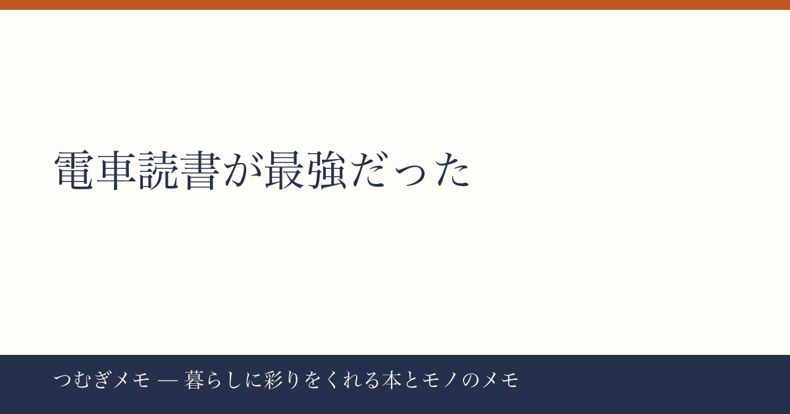

こんにちは、つむぎです。今週のXを眺めていたら、読書投稿がじわじわ熱を帯びているのに気づきました。
この記事でわかること：「電車での読書」がなぜ今もっとも効率的な読書習慣なのか、実際の読書家の声と具体的な実践方法を整理します。
今週の要点
- 「電車読書が一番集中できる」と公言した投稿が519いいねを集め、共感が広がっている
- 積読を崩すきっかけとして「移動中の読書」を挙げる声が今週だけで複数流れた
- 辻村深月『この夏の星を見る』のような「青春×感動」系の本が夏の読書候補として急浮上している
---
今週、X上で519いいねを集めた読書投稿がある。香月日輪『桜大の不思議の森』の読了報告で、投稿者が書いたひとことが「電車での読書おすすめですよ」だった。
本の感想よりも、この「電車読書推し」の一文に多くの人が反応した点が興味深い。なぜ今、この言葉がこれだけ刺さったのか。
背景を考えると、「集中するための特別な環境を整えること」に疲れている人が増えているのではないかと思う。カフェに行かないと読めない、ノイズキャンセリングイヤホンがないと集中できない、読書専用の時間を確保しないと始められない——そういう「読書のための準備」が、読書のハードルを上げていた。電車はその逆で、「スマホをいじりにくい立場に強制的に置かれる」という構造的な集中環境になっている。逃げ場がないからこそ、本が読める。
さらに言えば、通勤・通学というすでに存在する移動時間に読書を乗せるだけなので、「時間を作る」コストがゼロだ。読書家が口をそろえて言う「スキマ時間活用」の最もシンプルな形が電車読書であることを、この投稿は短い言葉で思い出させてくれた。
今日できること： 次の電車移動では、乗る前にスマホをカバンの奥にしまってから乗り込む。取り出しにくくするだけで、自然に本に手が伸びる。
---
今週、読書タグの投稿を追っていると、同じ構造の報告が複数流れていた。「なんで今まで積読にしてたんだー」という後悔の言葉とともに本の感想を書く、というパターンだ。
辻村深月
楽天で『この夏の星を見る』を見る / Amazonで『この夏の星を見る』を見る の投稿もまさにその形で、「なんで今まで積読にしてたんだーっていうくらいめーっちゃ良かった」という書き出しが多くの人の共感を呼んでいた。
積読が崩せない理由のひとつは、「まとまった時間がないと読み始められない」という思い込みだ。しかし電車という物理的な締め切りがある空間では、「この区間だけ読む」という小さな単位で本に向き合える。1ページでも読めば、続きが気になって次の移動でまた開く——この小さなループが積読を崩す最速ルートになる。
夏は移動が増える季節でもある。帰省、旅行、花火大会への往復。電車に乗る機会が増えるということは、積読を崩す機会も増えるということだ。今週の読書投稿の盛り上がりは、そういう「夏の移動読書」への期待感と重なっている気がする。
今日できること： 積読リストから1冊だけ選んで、通勤・通学バッグに物理的に入れてしまう。「読もうと思っている」ではなく「バッグに入っている」状態にするだけで、読む確率が大きく変わる。
---
せっかく電車読書を始めても、本の選び方を間違えると続かない。今週話題になった2冊を例に整理してみる。
香月日輪 
楽天で『桜大の不思議の森』を見る / Amazonで『桜大の不思議の森』を見る は、投稿者が「森や自然やお地蔵さんとかに宿る不思議な力がお好きならピッタリ」と書いていたように、優しい世界観で読み進めやすい。1章が短く、駅間で区切りがつきやすいタイプの本だ。こういう「短い章構成」の作品は電車読書に向いている。
一方で辻村深月の『この夏の星を見る』は、「後半戦の◯◯◯をキャッチする誘い」で泣いたという感想が出るほど感情を動かす場面が多い。電車で泣いてしまうリスクはあるが、それも含めて「記憶に残る読書体験」になる。感動系の小説は、ある意味で電車という半パブリックな空間で読むことで感情の振れ幅が増す、という逆説もある。
電車読書に向いているのは、「章が短い」「世界観がやさしめ」「一度置いても戻りやすい」本。向いていないのは、複雑な人物相関図が必要な群像劇や、細かい数字が出てくるビジネス書。まず「読みやすい小説1冊」から始めるのが、習慣化の王道だ。
なお、雑誌や読み物系のコンテンツも電車との相性がいい。(PR) Fujisan.co.jp 雑誌のオンライン書店を見るでは最大70%割引で雑誌の定期購読ができるので、気になっていた雑誌を定期購読して「毎月の電車のお供」にする使い方もおすすめだ。
今日できること： Kindleや読書アプリを使っている人は、「オフライン保存」した本を1冊用意しておく。電波が途切れる区間でも読める環境を作っておくだけで、読書の継続率が変わる。
---
Q. 立ちっぱなしの満員電車でも読めますか？
文庫本や電子書籍リーダーなら片手でも読める。スマホの読書アプリも同様だ。ページをめくる動作が大きくなりがちな単行本・ハードカバーは、席が取れてから読む本として分けておくと使い分けがしやすい。
Q. 電車読書で酔う場合はどうすればいいですか？
酔いやすい人は「進行方向の席に座る」「本を顔から少し離して持つ」の2点を試してほしい。どうしても酔う場合は、ポッドキャストの読書系番組やオーディオブックに切り替えるという手もある。「電車×本コンテンツ」という組み合わせ自体は維持できる。
Q. スマホで読むのと紙の本、どちらが電車に向いていますか？
一概には言えないが、「ちょこちょこ乗り降りする路線」ならスマホ、「長距離の移動が多い」なら紙、という使い分けが現実的だ。スマホは通知をオフにする手間がかかる反面、いつでも開けるのが強み。紙は開いた瞬間に「読書モード」になれるのが強み。
---
電車という「スマホの誘惑から逃げやすい空間」を読書の場として使い倒す——シンプルだけど、今週のXの盛り上がりを見ていて「やっぱりここだな」と思いました。夏の移動シーズン、ぜひバッグに1冊忍ばせてみてください。
このブログ「つむぎメモ」は、AIと一緒に運用している実験的なメディアです。毎週のバズを分析しながら、暮らしに使えるヒントを拾い上げています。気に入ったらブックマークしてもらえると嬉しいです。またね。
📚 目次へ